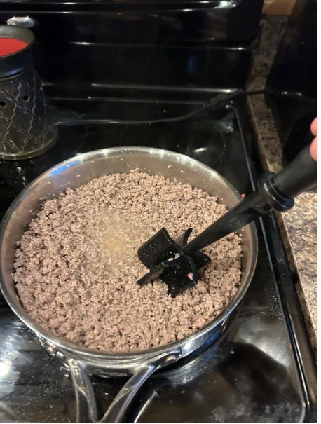
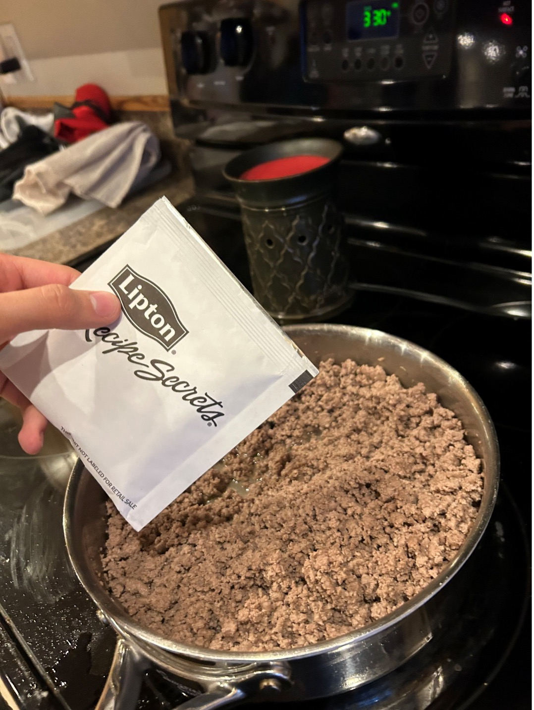
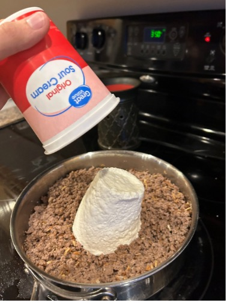
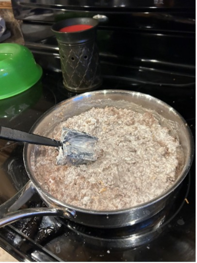
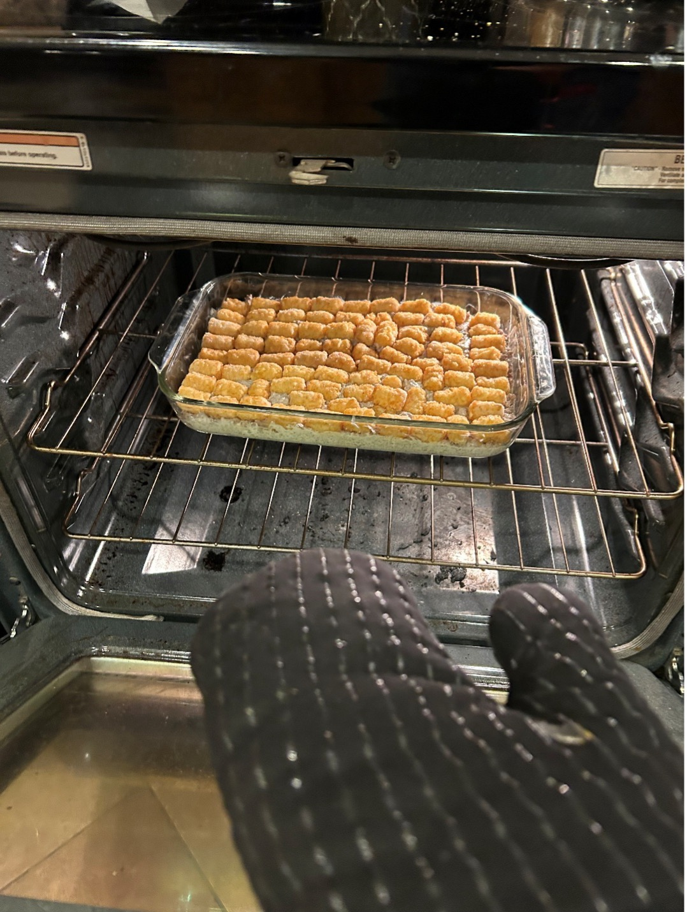
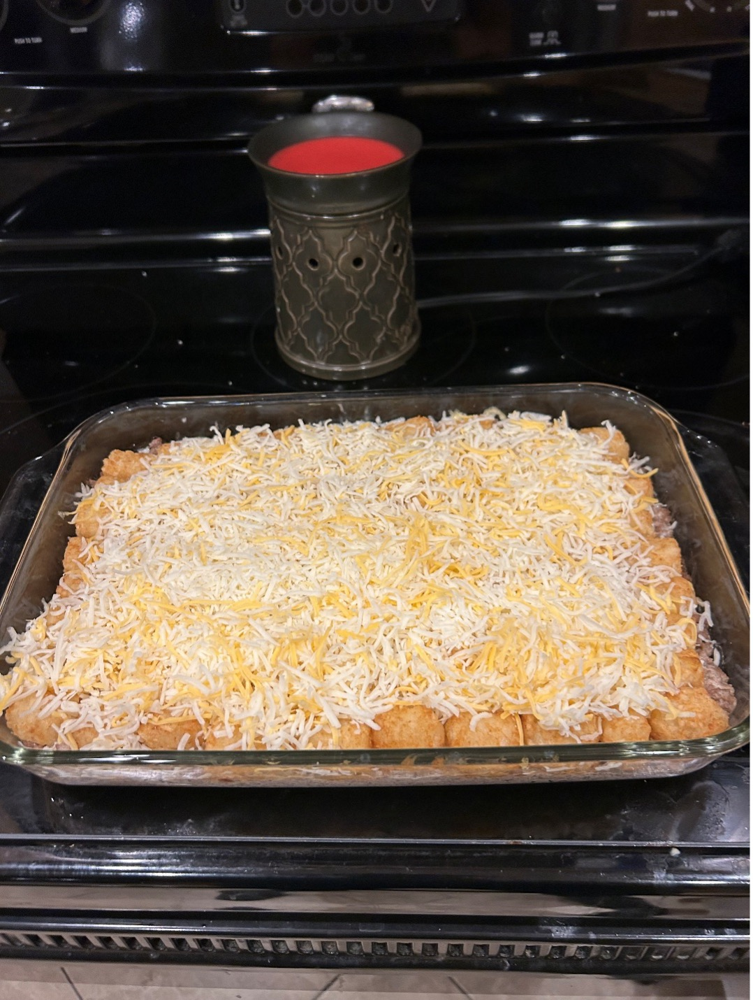
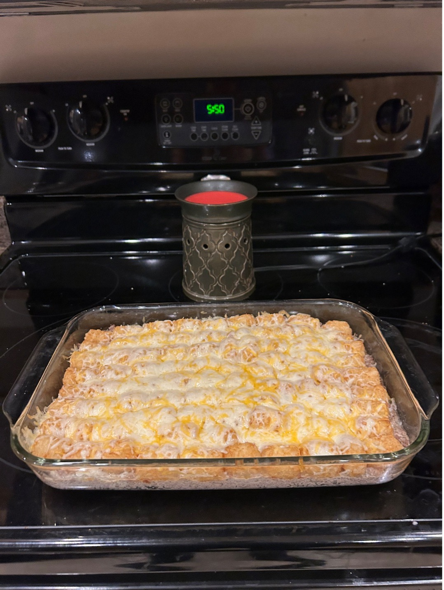
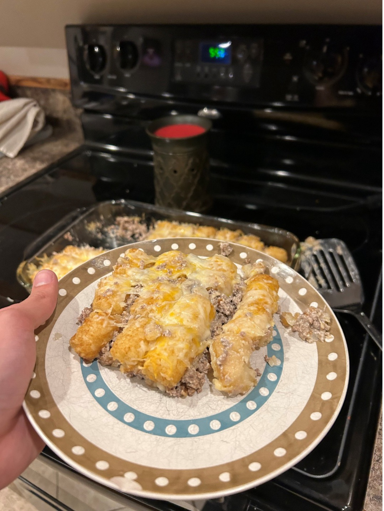

Step 1
Preheat oven to 350°F
Step 2
Heat up cooking spray on a skillet and place ground beef on skillet at medium heat. Meat chopper may be used to break into itty-bitty pieces and heat till meat is browned.
Step 3
Add 1 packet of onion seasoning and 1lb. of sour cream to mixture. Stir till mixed and sour cream has bonded.
  Step 4
Take the ground beef mixture and spread it out in the baking dish, then completely cover the Ground beef with the tater tots.
Step 5
Place casserole in the oven and bake for 30min and take out of oven.
Step 6
Evenly spread the cheese over the baked casserole, then place back in oven for another 5min.
Step 5
Take casserole out of oven once cheese is completely melted over tater tots.
Step 5
Enjoy completed tater tot casserole!!
